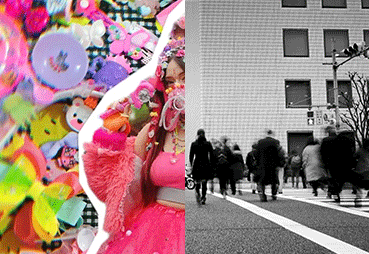

LA TIRANÍA DE
LA ESTÉTICA
NEUTRA
Cómo el mundo se volvió gris para apagar tu mente.
Entras a una cafetería moderna. Las paredes son de hormigón pulido, las sillas son de madera pálida y los baristas visten delantales de lino beige. Abres Instagram. El feed de los creadores de contenido más populares parece una paleta de sombras de ojos "nude": blanco roto, arena, gris taupe y negro sutil. Vas a comprar ropa y las tiendas están inundadas de colecciones cápsula monocromáticas.
Vivimos en la era de la estética neutra. Nos la venden como el epítome de la madurez, la elegancia y la paz mental. Pero, ¿y si esta obsesión por borrar el color fuera, en realidad, el síntoma visual de una sociedad que busca anestesiar nuestra individualidad y nuestro pensamiento crítico?

// _PÉRDIDA_DE_IDENTIDAD
La pérdida de la individualidad sucede sin darte cuenta.
01_ De la armonía visual a la lobotomía cultural
El minimalismo, en su origen, era una filosofía de liberación: deshacerse del exceso material para concentrarse en lo esencial. Sin embargo, el capitalismo tardío y los algoritmos de las redes sociales lo han secuestrado, transformándolo en un estándar de uniformidad obligatoria.
Cuando todo el mundo consume el mismo diseño escandinavo, vive en los mismos espacios higienizados y viste con los mismos tonos apagados, ocurre un fenómeno psicológico sutil: la resistencia a la diferencia.
El peligro de lo neutro: El color, históricamente, ha sido sinónimo de identidad, rebelión, folclore y emoción. Al eliminarlo, eliminamos los contrastes. Y una mente que se acostumbra a no ver contrastes en su entorno, pronto deja de buscarlos en sus ideas.
Convertirse en un "ser gris" no es solo una cuestión de armario; es un estado mental. La sociedad actual premia la predictibilidad. Las grandes corporaciones y los algoritmos no quieren individuos ruidosos, complejos o contradictorios; quieren usuarios predecibles. ★
El "ser gris" y la muerte del pensamiento crítico
La pérdida de la individualidad se procesa en tres etapas silenciosas:
La comodidad de la masa: Vestir, pensar y hablar como el promedio reduce el riesgo de ser cancelado o juzgado. El gris es el camuflaje perfecto para los cobardes intelectuales.
La simplificación del debate: En un mundo monocromático, las ideas se vuelven binarias (blanco o negro, con nosotros o contra nosotros). Se pierde la capacidad de habitar los "matices", que es donde realmente reside el pensamiento crítico.
La anestesia emocional: Los colores vibrantes estimulan el cerebro. El exceso de neutralidad genera una calma artificial que, a largo plazo, se convierte en apatía. Y una ciudadanía apática no cuestiona el statu quo.
ESCRITO POR
Jellyfish Galaxy